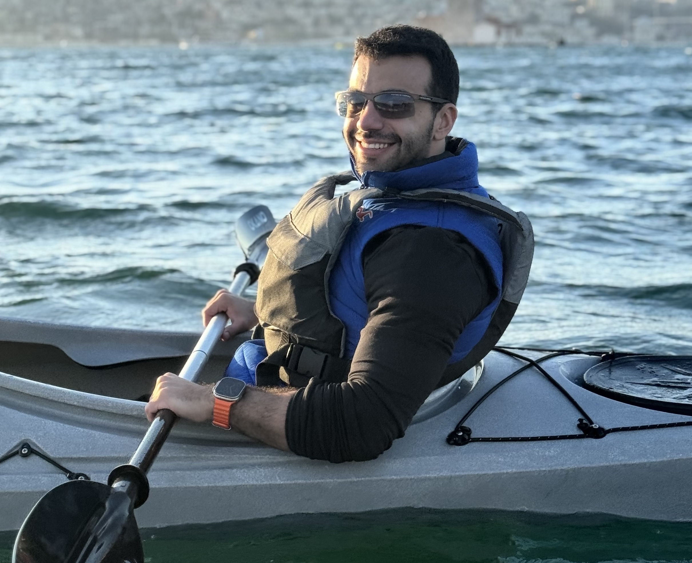

PhD Student · UIUC Computer Science
I am a 2nd year PhD student in Computer Science at UIUC, advised by Gokhan Tur and Dilek Hakkani-Tur. My research focuses on self-evolving LLM agents and agentic learning, with broader interests in reinforcement learning, self-play, and test-time training. I received an MSc in Computer Science from Koc University and a BSc in Electrical and Electronics Engineering (AI focus) from the same institution. My work has been published in top-tier venues including but not limited to NeurIPS, ICLR, ACL, and EMNLP' representative works include ToolRL, TT-SI, and Tool-R0. I am the founding organizer of the First Workshop on Lifelong Agents: Learning, Aligning, and Evolving at ICLR 2026, as part of Project Lifelong Agent.
My Motivation: agents that can continually learn, adapt, and generalize with minimal supervision; the dream of superintelligent systems that don't stop learning after deployment. This is the broader vision shaping my PhD.
The project is structured around three pillars. I focus primarily on the Evolving side: how agents can continuoally adapt through experience, self-play, and test-time training.
April 26, 2026 · lifelongagent.github.io
Two truths and one fun fact about me — guess which is which: